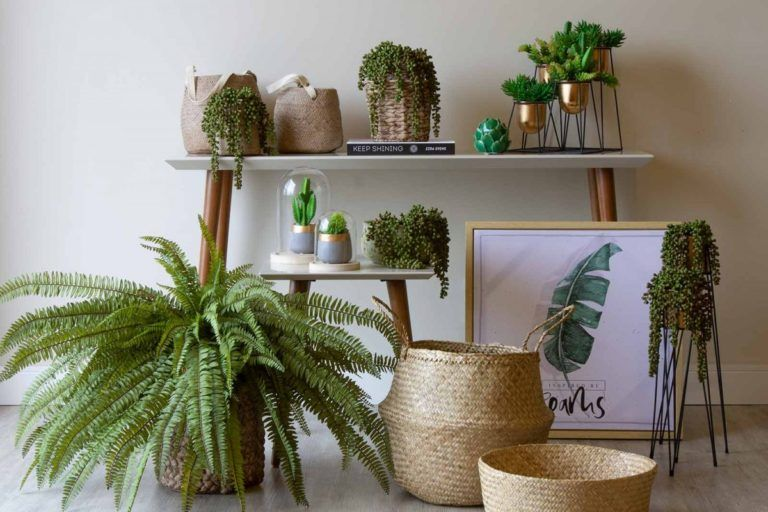
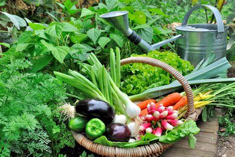

Plante
Cada árvore que plantamos faz a diferença
Elas ajudam a reduzir o dióxido de carbono na atmosfera, fornecem habitat para a vida selvagem, previnem a erosão do solo e muito mais. Além disso, as árvores também têm um impacto positivo em nossa saúde mental e bem-estar. Então, continue plantando árvores e fazendo a diferença! Há formas diferentes de fazer o plantio: em jardins, vasos, hortas, canteiro e por aí vai, até onde a imaginação levar. Além das plantas proporcionarem inúmeros benefícios por si só, algumas são medicinais, outras auxiliam na umidade, além de outros proventos. Além do mais, as plantas também são usadas como decoração em muitas casas. O contato com a natureza também pode ajudar na aprendizagem de disciplina e nos próprios cuidados. Plantar também pode ser considerado uma forma de passatempo e hobby para muitos. Por conta disso, separamos algumas dicas de como plantar e o passo a passo do plantio. Além disso, sugestões de plantas para começar a treinar essa habilidade tendo um jardim ou vasos em casa.
Sugestões de plantas fáceis de plantar e manter
- Cactos e suculentas
Os cactos e as suculentas são plantas conhecidas pela facilidade de cuidado, além de serem ótimas como decoração. Assim, para mantê-las, basta regar uma vez na semana e deixá-las próximas a janelas ou entradas de luz indireta. Além disso, para plantar é preciso apenas terra e um vasinho.
Samambaias
As samambaias, assim como os cactos e as suculentas, são muito fáceis de serem cuidadas e plantadas. Além disso, ficaram muito populares em casas e apartamentos pelo país como itens de decoração. As samambaias exigem poucos cuidados, não é necessária rega constante e muita exposição solar. Além disso, para plantar são necessários apenas terra, vaso e disposição.
Hortaliças
Além das plantas de decoração, que tal tentar começar a plantar pelas hortaliças? São inúmeras as opções de plantas de horta. Essas plantas, além da facilidade na hora de plantar, são úteis como tempero na cozinha, podem ter efeitos medicinais e não requerem grande manutenção depois de plantadas. Essa ação incentivou os produtores a aumentar suas produções e diminuir a fome no país. Com uma maior oferta de produtos e menos necessidade de importação, os preços dos produtos alimentícios reduziram, favorecendo a sociedade.